802.11 Wifi
Industrial Scientific Medical band (ISM band)
De frequenties in de ISM band zijn ongelicenseerd wat betekent dat iedere technologie deze bandbreedte mag claimen. Bijgevolg zijn er veel technologieën op deze banden actief en vooral de 2.4 GHz band wordt veel gebruikt met name voor Wifi en Bluetooth netwerken.
Meer recente Wifi routers gebruiken ook de 5 GHz of de 6GHz band. Dit zijn dan wat we Dual band / Triple band of zelfs Quad band routers noemen.
- Dual band: 2.4 GHz + 5 GHz
- Tri band: 2.4 GHz + 5 GHz + 5 GHz (bv. 5.2 GHz en 5.8 GHz)
- Quad band: 2.4 GHz + 5 GHz + 5 GHz (bv. 5.0 GHz en 5.2 GHz) + 6 GHz
Je kan Wifi wat vergelijken met FM radio. Bij FM radio is er een frequentieband voorzien van ongeveer 88MHz tot 108MHz. Binnen die frequentieband zijn er verschillende draagfrequenties zoals bijvoorbeeld 101.1MHz waarop een zender kan uitzenden. Iedere zender heeft zijn eigen aparte draagfrequentie. Links en rechts van de draagfrequentie (101.0 en 101.2 MHz) is het signaal iets zwakker maar nog steeds hoorbaar. We noemen dit een kanaal. Als twee zenders op dezelfde draagfrequentie uitzenden dan storen ze elkaar.
Terug naar Wifi. In de 2.4 GHz band is de minimum draagfrequentie 2.4 GHz en de maximum draagfrequentie is 2.4835 GHz. De totale bandbreedte is dus zo’n 83.5 MHz. Deze bandbreedte wordt verdeeld in 14 kanalen waarvan er 13 gebruikt worden in Europa. Een belangrijk nadeel van deze band is dat de kanalen elkaar overlappen. Als we terugdenken aan onze FM radiozenders dan betekent dit dat verschillende zenders elkaar kunnen storen. Dit heeft een zeer nadelige invloed op de snelheid van ons draadloos netwerk.
De 5 GHz- en 6 GHz-banden bieden veel meer kanalen die niet overlappen, wat ze beter geschikt maakt voor snellere, stabiele wifi-verbindingen zonder onderlinge interferentie. De 5 GHz-band wordt bovendien opgesplitst in meerdere deelbanden (zoals UNII-1, UNII-2, UNII-2e en UNII-3), elk met hun eigen reeks kanalen.
Sommige routers maken gebruik van meerdere radio’s om gelijktijdig op verschillende banden of sub-banden te werken. Dit verklaart de termen tri-band en quad-band.
Een tri-band router heeft bijvoorbeeld één 2,4 GHz-radio en twee aparte 5 GHz-radio’s. Die kunnen elk op een andere sub-band werken, zoals 5.2 GHz en 5.8 GHz. Zo kunnen meer toestellen tegelijk verbinding maken zonder dat ze elkaars snelheid beïnvloeden.
Een quad-band router voegt daar nog een vierde radio aan toe, meestal op de 6 GHz-band (beschikbaar bij wifi 6E of wifi 7). Dit maakt het mogelijk om nóg meer apparaten gelijktijdig, snel en zonder storing te bedienen.
Het is dus belangrijk om te begrijpen dat "tri-band" of "quad-band" niet betekent dat er drie of vier volledig verschillende frequentiebanden zijn, maar wel dat de router meerdere radio’s bevat die onafhankelijk op (sub-)banden kunnen uitzenden, vaak binnen dezelfde frequentiegroep.
Hoe hoger de draagfrequentie, hoe hoger de maximale doorvoersnelheid. Hier tegenover staat dan wel dat het maximale bereik van het signaal zakt. De 2.4 GHz band is dus iets trager maar heeft een groter bereik dan de 5 of 6 GHz band. Met geavanceerde technieken zoals beamfomring en mesh netwerken slaagt men er toch in om het bereik op de 5 en 6 GHz band hoog te houden.
In de volgende hoofdstukken bespreken we de verschilende generaties wifi.
802.11 b (11 Mbps)
Hoewel de naam je doet vermoeden dat er op het draadloos netwerk snelheden kunnen worden gehaald tot 11 Mbps is dit helemaal niet zo in de praktijk.
Meestal worden er snelheden gehaald tussen de 600 kBps en 800 kBps. Dit is zeer weinig, zeker gezien deze capaciteit gedeeld wordt over alle stations.
Een hedendaagse breedband internetverbinding werkt veel sneller dan dit type draadloos netwerk waardoor de draadloze router dan de bottleneck wordt in het netwerk. In de winkel zal je deze standaard dan ook niet meer terugvinden.
802.11 b gebruikt de Industrial Scientific and Medical (ISM) band rond 2.4 GHz. Omdat er voor deze band bijna geen regelgeving bestaat kan 802.11b apparatuur soms storingen (interferentie) ondervinden van apparaten die dezelfde band gebruiken, zoals bijvoorbeeld magnetrons, motoren, draadloze telefoons en andere draadloze routers.
De standaard verdeelt de radioband in veertien kanalen maar enkel Japan gebruikt dit laatste kanaal. Zoals je kan zien in de tabel mogen enkel kanaal 10 en 11 wereldwijd worden gebruikt.
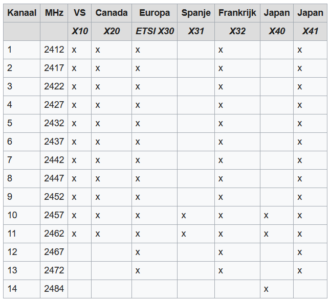
In de praktijk wordt slechts op 1 kanaal uitgezonden. Dit betekent dat de rest beschikbaar blijft voor andere draadloze netwerken.
Bij dit laatste moeten we echter wel een opmerking maken. Als we de kanalen en hun bandbreedte grafisch voorstellen dan zien we dat deze overlappen. Een router die uitzendt op kanaal 1 zal dus ook andere zenders storen op kanaal 2, 3, 4 en 5.
Maar... ook hier moeten we een kanttekening bij maken gezien de breedte van de kanalen niet exact 22 MHz is. Aan het uiteinde is er enkel een verzwakking van minstens 30 dB (1000x minder sterk dan het originele signaal). In feite kan kanaal 1 dus ook kanaal 6 storen, zij het minimaal.

Wanneer je een kanaal kiest voor dit type netwerk doe je er dus goed aan om rekening te houden met de sterkte van de zenders rondom je en dan kies je een kanaal dat daar zo ver mogelijk vandaan ligt.
802.11 g (54 Mbps)
We kunnen over deze standaard vrij kort zijn gezien deze grotendeels gelijkaardig is aan 802.11 b. Het belangrijkste verschil is uiteraard de hogere theoretische snelheid die nu 54 Mbps bedraagt. In de praktijk ga je dit type netwerk niet veel meer tegenkomen gezien die snelheid ondertussen al lang achterhaald is.
802.11 n / Wifi 4 (600 Mbps)
Deze routers halen een maximum (theoretische) snelheid van 600 Mbps, een grote sprong vooruit ten opzichte van 802.11 g.
Om die snelheid van 600 Mbps waar te maken gebruikt de ‘n’ standaard onder andere Sinlge User Multiple Input Multiple Output (SU-MIMO) technologie. De details gaan we hier achterwege laten maar MIMO betekent dat er meerdere antennes gebruikt worden waarover meerdere datastromen in parallel worden verstuurd. Single User betekent dan weer dat dit maar met één ontvanger tegelijkertijd kan. De andere ontvangers in het netwerk moeten hun beurt afwachten.
Dit is niet zo erg bij draadloze netwerken met weinig clients maar het wordt wel een probleem bij grotere netwerken. En het wordt al helemaal problematisch als er clients zijn die continu grote hoeveelheden data downloaden of uploaden zoals het geval is bij streaming video.
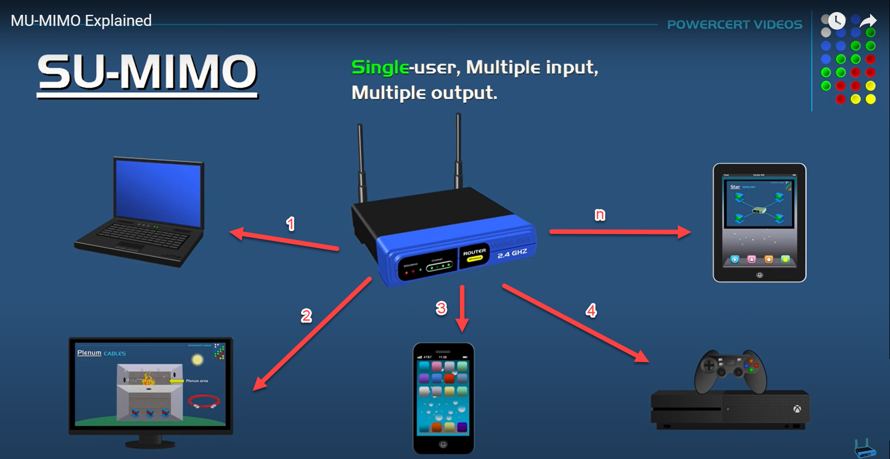
Verder kan, als de router dat ondersteunt, de n standaard nu ook de 5 GHz band gebruiken. In deze band overlappen de kanalen elkaar niet waardoor ze elkaar niet kunnen storen. We spreken dan over een dual band router.
In de 5 GHz band is de maximale theoretische snelheid hoger dan op de 2.4 GHz band maar daartegenover staat dat het maximum bereik iets lager is.
Het is misschien het makkelijkst om dit fenomeen te verklaren aan de hand van een voorbeeld. Als je met een lage stem en langzaam praat (lage frequenties) kan een persoon je tot op een grote afstand horen. Als je met een hoge stem en snel praat (hoge frequenties) dan wordt die afstand kleiner maar ga je in dezelfde tijd meer gezegd hebben.
Ook kan een zender zich nu twee kanalen toe-eigenen in plaats van één. Ment noemt dit ook wel channel bonding. Bij channel bonding wordt de bandbreedte verdubbeld en hiermee ook de snelheid.
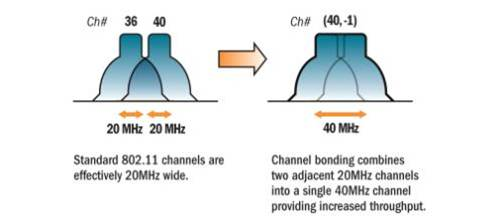
De enige voorwaarden zijn dat de kanalen elkaar niet overlappen én dat ze naast elkaar liggen.
In de 2.4 GHz band zou het gebruik van kanaal 1 en 6 of kanaal 6 en 11 een goede keuze zijn om aan channel bonding te doen.
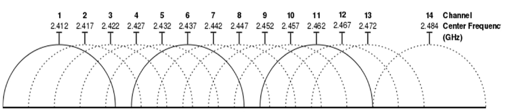
In de 5 GHz band zijn er geen overlappende kanalen dus kies je gewoon twee aanliggende.
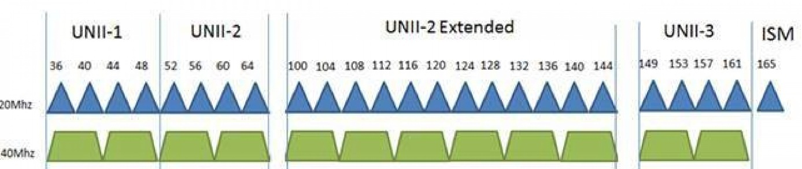
802.11 ac / Wifi 5 (6.9 Gbps)
De 802.11ac-standaard ondersteunt enkel de 5 GHz-band. Veel dual-band routers combineren deze met de 2,4 GHz-band, waarop dan meestal de oudere 802.11n-standaard actief is. In zo’n geval spreekt men nog steeds van een dual-band router, omdat hij op twee frequentiebanden werkt, ook al gebruikt hij op elke band een verschillende Wi-Fi-standaard.
Naast ondersteuning voor Multi-User MIMO (waardoor meerdere apparaten tegelijk kunnen communiceren), beschikken deze routers ook over beamforming. Dit betekent dat het draadloze signaal gericht wordt naar de ontvanger, wat het bereik en de signaalsterkte aanzienlijk verbetert.
De maximale theoretische snelheid is bij 802.11ac flink gestegen ten opzichte van eerdere standaarden. Dit komt vooral doordat er gebruik wordt gemaakt van channel bonding met maximaal 8 kanalen, wat een totale bandbreedte tot wel 160 MHz mogelijk maakt, tegenover 40 MHz bij 802.11n.

802.11 ax / Wifi 6 (9.6 Gbps)
Zonder al te veel verassingen is ook bij deze standaard de maximum theoretische snelheid gevoelig verhoogd. Zonder in al te veel detail te treden is deze standaard in grote lijnen een uitbreiding op 801.11 ac maar de technische details overstijgen het bereik van deze cursus.
Het enige wat je moet onthouden is dat bij 802.11ax (Wi-Fi 6) zowel de 2.4 GHz- als de 5 GHz-band worden gebruikt, en dat ook hier aan channel bonding kan worden gedaan voor hogere snelheden.
Maar: een 802.11ax-router kan ook een tri-band router zijn. Dit betekent dat er drie afzonderlijke radio’s aanwezig zijn in de router: bijvoorbeeld één voor 2.4 GHz, en twee voor 5 GHz (bijvoorbeeld één voor het lagere 5 GHz-bereik rond 5.2 GHz en één voor het hogere bereik rond 5.8 GHz).
Dit zorgt ervoor dat meerdere apparaten gelijktijdig op verschillende 5 GHz-kanalen kunnen werken zonder elkaar te storen, wat vooral nuttig is in drukke netwerkomgevingen.
Bij Wi-Fi 6E, een uitbreiding van de 802.11ax-standaard, wordt naast de bestaande 2,4 GHz- en 5 GHz-banden ook de nieuwe 6 GHz-band toegevoegd. Hierdoor kunnen Wi-Fi 6E-routers gebruikmaken van drie frequentiebanden: 2,4 GHz, 5 GHz en 6 GHz.
Sommige Wi-Fi 6E-routers zijn uitgerust met meerdere radio’s per band. Zo kan een router bijvoorbeeld één radio gebruiken voor 2,4 GHz, twee aparte radio’s voor verschillende delen van de 5 GHz-band (zoals 5,2 GHz en 5,8 GHz), en één voor 6 GHz. In dat geval spreken we van een quad-band router.
Een nieuwtje is dat er aan Orthogonal Frequency Division Multiple Access (OFDMA) wordt gedaan om het draadloos spectrum beter te gebruiken.
Bij OFDM, de techniek die al sinds WiFi 4 gebruikt wordt, krijgt een client de volledige breedte van het kanaal, bijvoorbeeld 20MHz, tot zijn beschikking om data te zenden of te ontvangen. Als er verschillende clients zijn, zullen ze afwisselend van het kanaal gebruik mogen maken.
Dat gaat zodanig snel dat het lijkt alsof het tegelijkertijd gebeurt. Je kunt bijvoorbeeld prima via een video streamen terwijl je op een ander apparaat een website bezoekt, maar in feite bedient je router de clients na elkaar.
Bij OFDMA wordt het kanaal in kleinere sub kanalen verdeeld waardoor je er meer gelijktijdige verbindingen (meer clients) met het netwerk kunnen verbonden worden zonder dat ze elkaars prestaties beïnvloeden.
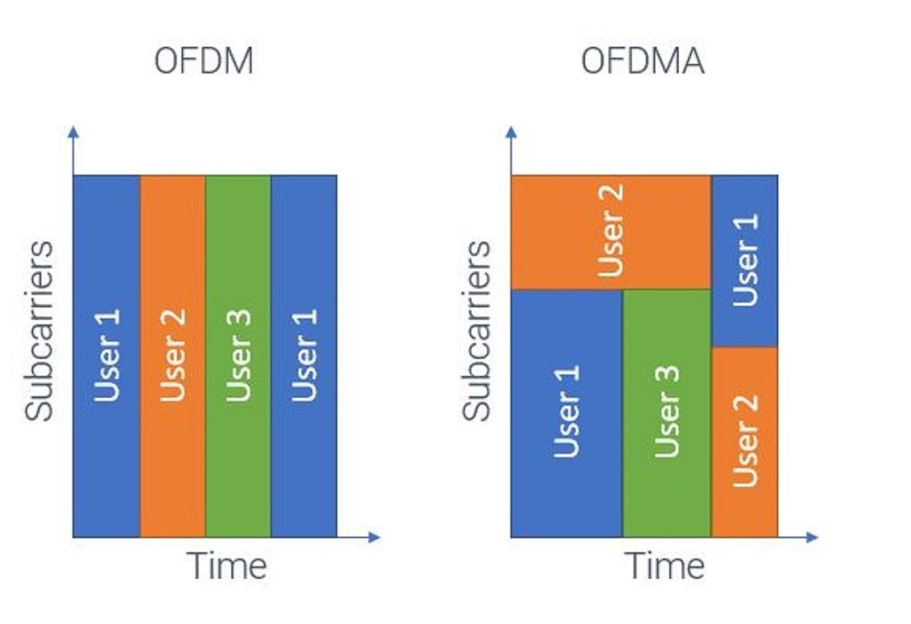
Je kan OFDMA een beetje vergelijken met een snelweg die opgedeeld werd in rijvakken.
802.11 be / Wifi 7 (theoretisch: 46Gbps / praktisch: 23Gbps)
Wifi 7 is de nieuwste generatie Wifi en belooft sneller, stabieler en efficiënter internet dan ooit tevoren. Met Wifi 7 kunnen gebruikers theoretisch snelheden tot 46 Gbps behalen, al ligt de snelheid in de praktijk meestal rond de 23 Gbps. Dat is ruim twee keer zo snel als Wifi 6.
Een van de grootste verbeteringen is dat Wifi 7 (net als Wifi 6e) gebruik maakt van alle drie de frequentiebanden: 2,4 GHz, 5 GHz én 6 GHz. Hierdoor is er meer ruimte voor gegevensverkeer, wat vooral helpt bij drukke netwerken met veel apparaten. Let wel: een draadloze Wifi 7 router hoeft niet alle banden te gebruiken. Een Wifi 7 router kan dus ook een tri band router zijn. Goed opletten voor je een toestel aankoopt dus.
Wifi 7 introduceert ook Multi-Link Operation, een technologie waarmee apparaten meerdere wifi-verbindingen tegelijk kunnen gebruiken. Je kan bijvoorbeeld tegelijk de 5 en 6 GHz band gebruiken.
Verder maakt Wifi 7 gebruik van slimmere signaalversleuteling (4096-QAM), waardoor er meer gegevens per seconde verzonden kunnen worden. Ook is het systeem beter geworden in het efficiënt verdelen van het netwerk tussen meerdere gebruikers.
Service Set IDentifier (SSID)
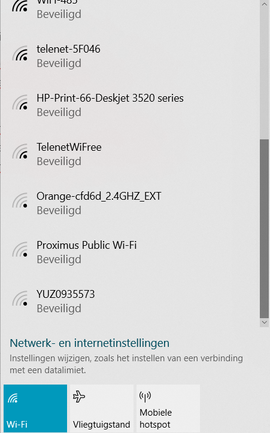
Het SSID van het draadloos netwerk van de Hogeschool is eduroam. Om op een draadloos netwerk in te loggen, moet het apparaat dat een verbinding wil maken het SSID ervan weten.
Normaal gezien stuurt een Access Point elke paar seconden een voor iedereen leesbare boodschap met daarin zijn SSID.
Op die manier weet je dus als een draadloos netwerk aanwezig is of niet en kan je eventueel proberen om erop aan te melden.
Op de router kan je instellen om het SSID verborgen te houden. Als je op zo’n netwerk wil aanmelden ga je dus eerst zelf de naam van het netwerk moeten ingeven.
Securtiy mode
Een bedraad netwerk beveiligen is eenvoudiger dan een draadloos netwerk beveiligen. Iemand moet zich al toegang verschaffen tot het gebouw en een kabel inpluggen op een switch. Een draadloos netwerk beperkt zich vaak niet tot de grenzen van een perceel waardoor je SSID ook zichtbaar is bij de buren.
Als je draadloos netwerk slecht beveiligd is dan kan iemand, zonder er al te veel moeite voor te doen, toegang toe krijgen. Eenmaal aangemeld op je netwerk kan hij toegang krijgen tot bestanden op computers in je netwerk, je netwerkverkeer onderscheppen en alle verkeer naar (illegale) websites lijken uit jouw naam te komen.
Het mes snijdt natuurlijk ook langs twee kanten. Als jij een verbinding maakt met een (onbeveiligd) netwerk dan is jouw computer misschien ook doelwit van personen met minder goede bedoelingen. Een ‘open’ Wifi netwerk op een luchthaven of op café lijkt misschien een goed idee maar je bent toch best voorzichtig.
Een goede beveiliging kiezen voor je Wifi netwerk is geen overbodige luxe. Vandaag de dag kies je voor WPA2 AES en als je router het ondersteunt voor WPA3.
Bij die instelling hoort ook een sleutel, en op je router thuis staat die als Pre-Shared Key of PSK. Pre-shared betekent op voorhand gedeeld: er is één sleutel, en iedereen die op het netwerk mag, kent ze. Het is het wachtwoord dat je intikt als je een gsm verbindt, en dat vaak op een sticker achteraan de router staat. Je herkent deze werkwijze aan het woord Personal in de naam van de security mode, zoals WPA2-Personal. Een school of een bedrijf kiest Enterprise, waar elke gebruiker zich met zijn eigen aanmelding aanbiedt en er dus geen gedeelde sleutel is.
Aan die ene sleutel hangt dan wel je hele netwerk. Tegen AES zelf is geen aanval bekend, dus wie binnen wil, probeert sleutels uit tot er een past. Daarom maak je een PSK lang en niet te raden: geen woord uit het woordenboek, geen naam, geen geboortedatum, en zeker niet de sleutel die de fabrikant erop gezet heeft.
In het artikel op de volgende pagina’s lees je waarom.
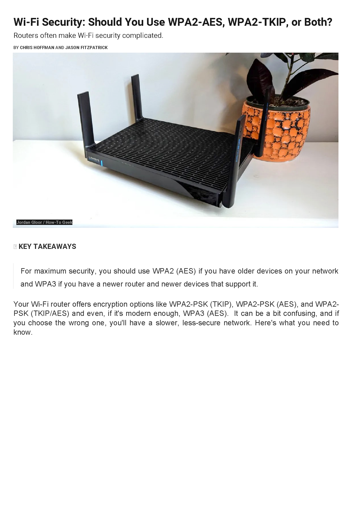
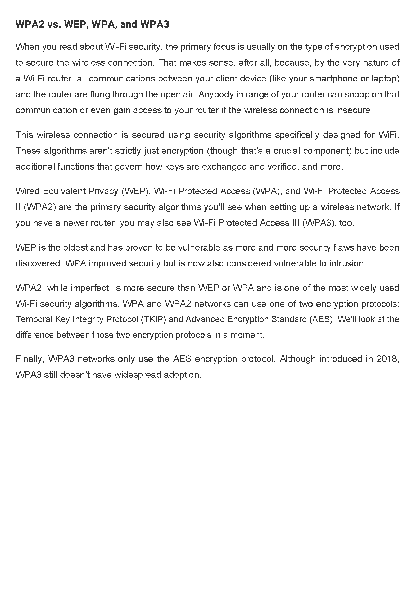
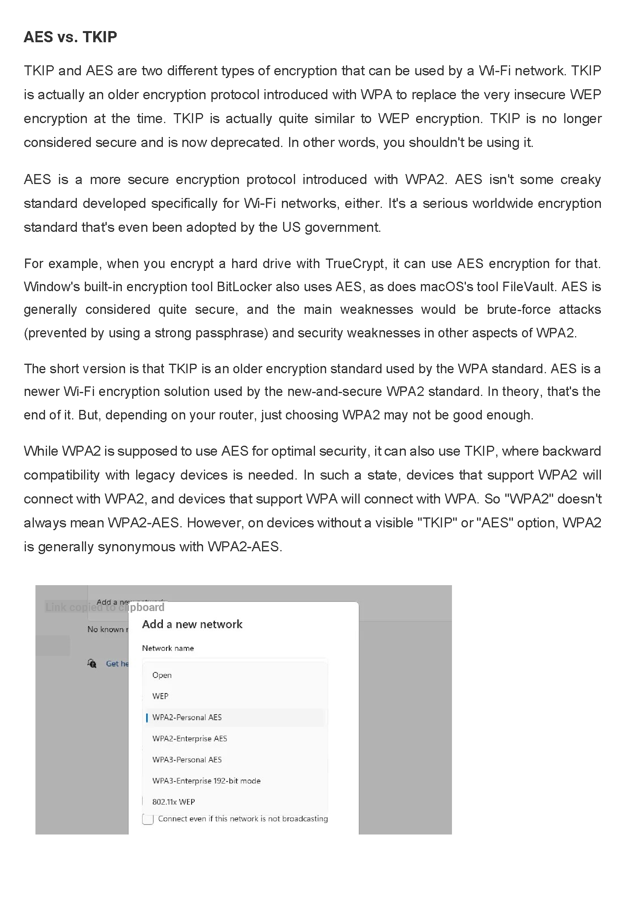
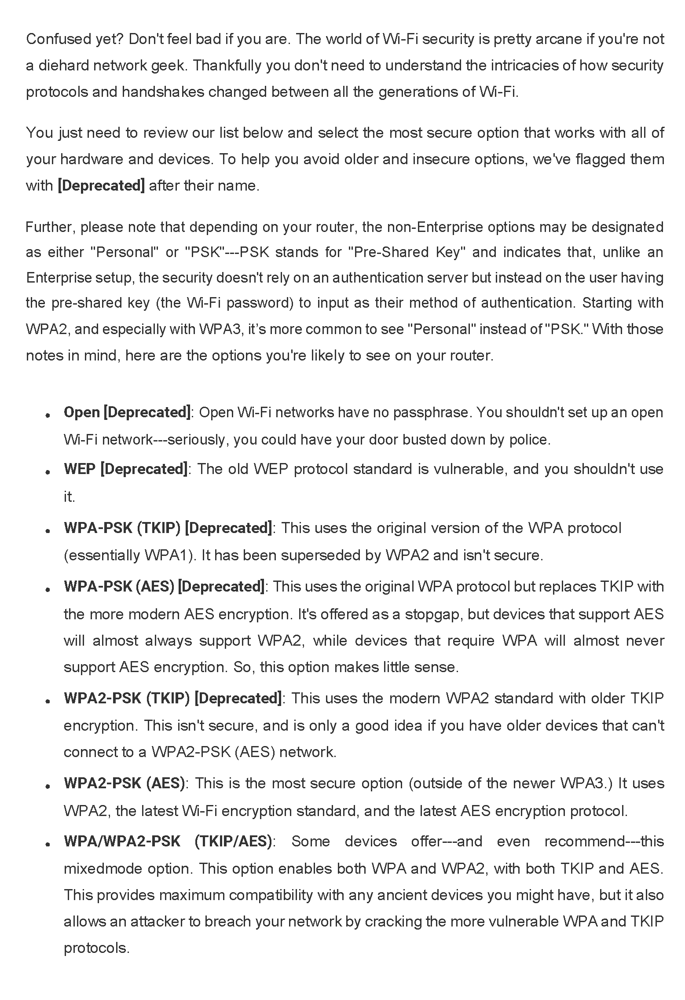
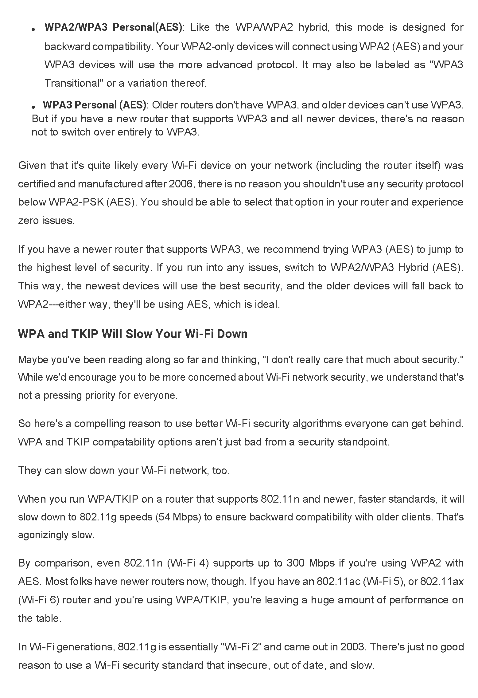